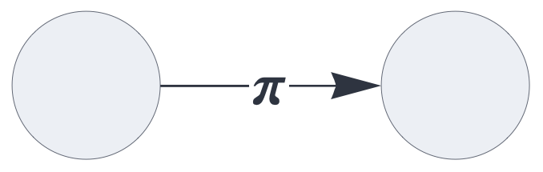
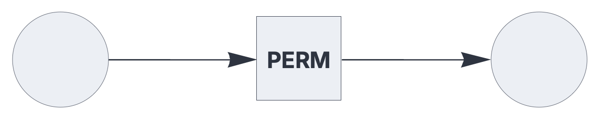
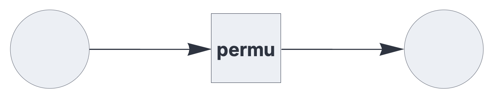

CIRCUIT COMPONENTS
circuit
A component that embeds an entire circuit.
See also: https://creatingintelligence.org/#circuits
Details and properties
- Circuits can be nested to any depth, provided the nesting is acyclic.
- Uses the
sharedplugin for embedding a shared circuit. - Uses the
fileplugin to create a local embedded circuit. - Exchanges sets or multisets with the embedded circuit.
- The embedded circuit may use
inputoroutputplugins to preprocess or postprocess the exchanged data.
| Property | Default | Description |
|---|---|---|
send |
required | output slots, as a list of integers |
receive |
required | input slots with optional pathway tags |
plugin |
shared |
extension module |
name |
required | registry identifier / filename |
Shared embedded circuits
An instantiated circuit can be shared to and embedded by
other circuits by registering it via a name
option:
{ "options": {"name": "PERM"},
"hyperparameters": {"default": [1000, 10]},
"dataflow": [
{"component": "input", "send": [1]},
{"component": "output", "receive": [{"slot": 1, "tags": ["permute"]}]}
]}
The following circuit embeds the above instance by referring
to its registry name. The same shared instance can be embedded
by multiple circuit components.
{ "hyperparameters": {"default": [1000, 10]},
"dataflow": [
{"component": "input", "send": [1]},
{"component": "circuit", "plugin": "shared", "send": [11],
"receive": [1], "name": "PERM"},
{"component": "output", "receive": [11]}
]}
The hyperparameters of shared embedded circuits must match the parameters of its inbound and outbound slots.
Local embedded circuits
Using the file plugin, the circuit
component imports a JSON circuit description and embeds a local
instance:
{ "hyperparameters": {"default": [1000, 10]},
"dataflow": [
{"component": "input", "send": [1]},
{"component": "circuit", "plugin": "file", "send": [11],
"receive": [1], "name": "permutation.json"},
{"component": "output", "receive": [11]}
]}
If the embedded circuit specifies a registry name, it can be
shared across multiple circuit components.
The hyperparameters of local embedded circuits are automatically rescaled to match the parameters of its inbound and outbound slots.
Source code
def circuit(config):
"""
Embedded circuit component.
Multiple circuit components can reference the same embedded instance.
"""
plugin_factory = config.get("plugin", shared)
if isinstance(plugin_factory, str):
import sys
plugin_factory = getattr(sys.modules[__name__], plugin_factory, shared)
plugin = plugin_factory(config)
if not plugin:
return {}
params = [plugin.get("receive_blocks", []), plugin.get("send_blocks", [])]
if [config.get("receive_blocks", []), config.get(
"send_blocks", [])] != params:
raise ValueError(
f"Hyperparameters of embedded circuit do not match: {params}")
def f(*blocks):
return plugin["function"](*blocks)
result = dict(plugin)
result.update({
"function": f,
"checks": ["arginp", "argout"],
"shape": "square", "size": 9
})
return resultPlugins
def shared(config):
"""Plug-in for embedding a precompiled circuit."""
name = config.get("name")
if not name:
raise ValueError(
f"Missing 'name' property in shared circuit: {config}")
sub = circuit_registry.get(name)
if not sub:
raise ValueError(f"Unknown circuit '{name}'.")
result = dict(sub)
result["label"] = name
result.pop("clear", None)
return resultdef file(config):
file_path = config.get("name")
if not file_path:
raise CircuitError(f"Missing 'name' property in {config}")
if not file_path.endswith(".json"):
file_path += ".json"
# Search current working directory first, then sys.path
search_paths = [""] + sys.path
full_path = None
for base in search_paths:
target = os.path.join(base, file_path) if base else file_path
if os.path.exists(target):
full_path = target
break
if not full_path:
raise CircuitError(
f"File '{file_path}' not found in current directory or sys.path.")
with open(full_path, "r") as f:
circ_expr = json.load(f)
# Rescale hyperparameters of embedded circuit
scale = config.get("scale")
default_hp = circ_expr.get("hyperparameters", {}).get("default")
if (isinstance(scale, (list, tuple)) and len(scale) == 2 and
isinstance(default_hp, (list, tuple)) and len(default_hp) == 2):
# Calculate separate scaling factors
rescale_factor_n = scale[0] / default_hp[0]
rescale_factor_p = scale[1] / default_hp[1]
# Apply scaling to all hyperparameters in the embedded circuit
for k, v in circ_expr["hyperparameters"].items():
if isinstance(v, (list, tuple)) and len(v) == 2:
circ_expr["hyperparameters"][k] = [
round(v[0] * rescale_factor_n),
round(v[1] * rescale_factor_p)
]
# Compile the imported circuit
sub = Circuit(circ_expr)
# Extract up to 5 characters from the filename for the label
base_name = os.path.splitext(os.path.basename(file_path))[0]
sub["label"] = base_name[:5]
return sub